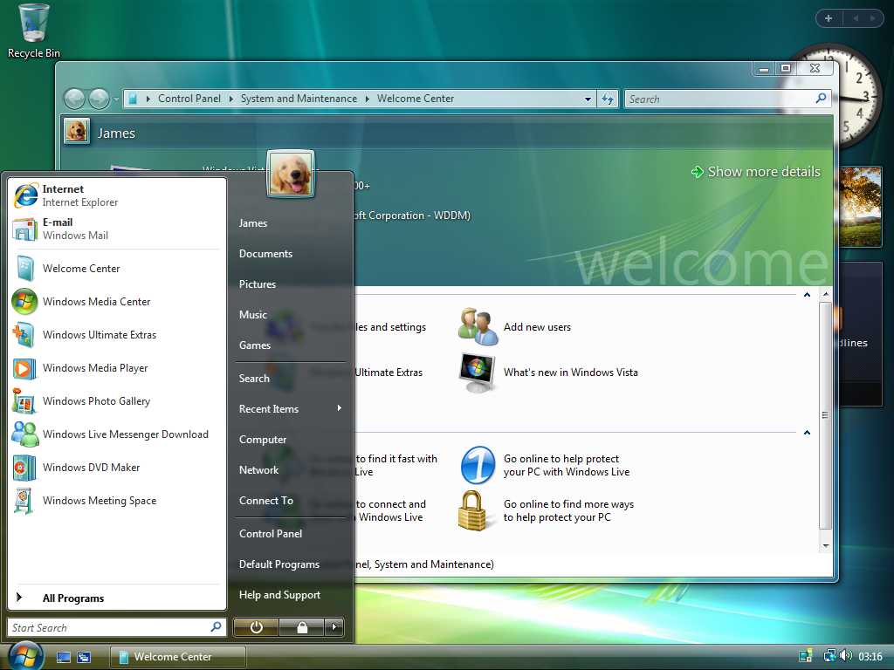
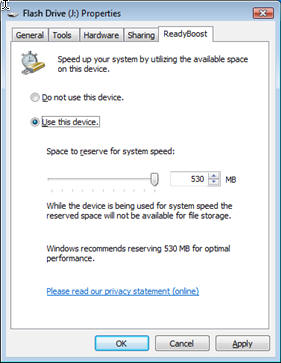

(軟體篇)Windows 操作系統 <<
Previous Next >> (軟體篇)Windows 7操作系統
(軟體篇)Windows vista 操作系統
總覽
Windows Vista旨在取代Windows XP，這是Microsoft發布的最流行和最可靠的操作系統。 Vista於2007年發布，是微軟對家庭計算性質不斷變化的回應，包括網絡和數字媒體訪問，以及Internet的廣泛變化，不僅用於數據檢索，還用於Web 2.0，商業和媒體流。 在業務方面，Vista的設計旨在為IT部門提高OS部署和管理的效率和安全性。 總體而言，Vista並不是出於很多原因而取代WinXP，但是它確實引入了許多新功能，這些新功能在Windows 7中仍然存在，並已成為Windows 8.1和Windows 10後續版本中的標準功能，包括帶有索引的Windows搜索（位於“開始”中的搜索框 菜單），用戶帳戶訪問權限（UAC），Aero功能，隨時升級和BitLocker。
Overview
Windows Vista was designed to replace Windows XP, the most popular and reliable OS released by Microsoft. Released in 2007, Vista was Microsoft’s response to the changing nature of home computing including networking and digital media access, and the widespread changes Internet for not just data retrieval, but Web 2.0, commerce, and media streaming. On the business side, Vista’s design was to make OS deployment and management more efficient and secure for IT departments. Overall, Vista did not replace WinXP for many reasons, but it did introduce many new features that continued in Windows 7 and have become standard features in subsequent versions up to Windows 8.1 and Windows 10, including Windows Search with Indexing (search box located in Start Menu), User Account Access (UAC), Aero features, Anytime Upgrade, and BitLocker.
從技術上講，Microsoft發布了六個版本的Vista，
，但簡化版僅適用於新興市場和經濟困難的市場，從未在任何地方出售或發布發達國家。四個零售版分別是Home Basic，Home Premium，Business和Ultimate。以及一個名為Enterprise的企業版。 Vista Enterprise僅可通過使用批量許可證密鑰激活的Microsoft軟件保障購買。
Windows Vista Home Basic包括Vista操作系統（OS）的所有基本功能，包括Windows Movie Maker，Windows Photo Gallery，父母控件和Windows Search的部分版本，以及對Microsoft環境的許多其他新增強功能。 Home Basic最多僅支持1個CPU，最大支持4 GB RAM（32位）/ 8 GB RAM（64位）。這是最便宜的版本，通常預裝在上網本和入門級台式機上。
Technically Microsoft released six editions of Vista, but the Starter Edition was only available in emerging and economically challenged markets and was never sold or released in any fully developed country. The four Retail Editions are Home Basic, Home Premium, Business, and Ultimate; and, one Corporate Edition named Enterprise. Vista Enterprise is only available for purchase through Microsoft Software Assurance using Volume License Key activation.Windows Vista Home Basic includes all the base features of the Vista operating system (OS), including a partial version of Windows Movie Maker, Windows Photo Gallery, parental controls, and Windows Search along with many other new enhancements to the Microsoft environment. Home Basic supports only 1 CPU maximum and 4 GB RAM (32-bit)/8 GB RAM (64-bit) maximum. This was the least expensive edition and was often preloaded on netbooks and entry-level desktops.
Home Premium添加了以下功能：Windows Aero的部分版本，Windows Movie Maker HD，DVD Maker，Windows Media Center（包括較早的WinXP Media Center功能），實況電視錄製和回放以及通過網絡自動計劃文件備份。家庭高級版最多僅支持1個CPU，最大支持4 GB RAM（32位）/ 16 GB RAM（64位）。
Home Premium adds features such as a partial version of Windows Aero, , Windows Movie Maker HD, DVD Maker, Windows Media Center (encompassing the older WinXP Media Center features), Live TV recording and playback, and automatic scheduling of file backups with networking. Home Premium supports only 1 CPU maximum and 4 GB RAM (32-bit)/16 GB RAM (64-bit) maximum.
Vista Business省略了許多家庭專用功能，例如父母控制，某些媒體工具，並使內置遊戲成為可選功能。業務專注於公司和企業功能，例如域網絡，文件和文件夾權限，遠程桌面，集中管理，計劃的聯網圖像和文件備份，卷影副本，傳真和掃描以及脫機文件功能。 Vista Business最多支持2個CPU，最大支持4 GB RAM（32位）/ 128 + GB RAM（64位）。
Vista Business omits many of the home specific features such as parental control, some of the media tools, and makes the built-in games optional. Business focuses on corporate and enterprise features such as domain networking, file and folder permissions, remote desktop, centralized management, scheduled networked image and file backups, shadow copy, fax and scan, and offline file capabilities. Vista Business supports up to 2 CPU’s maximum and 4 GB RAM (32-bit)/128+ GB RAM (64-bit) maximum.
Enterprise提供了除Small Business Resources之外的所有Vista Business Edition功能，添加了BitLocker加密，基於UNIX的應用程序子系統以及多語言用戶界面。專為在客戶端-服務器網絡環境中運行而設計的企業版包括高級網絡功能和最多四個虛擬機的許可。企業版最多支持2個CPU，最大支持4 GB RAM（32位）/ 128 + GB RAM（64位）。
Enterprise provides all Vista Business Edition features except Small Business Resources, adds BitLocker encryption, a UNIX-based application subsystem, and the Multilingual User Interface. Specifically designed to run in a client-server network environment, Enterprise includes advanced networking features and licensing for up to four Virtual Machines. Enterprise supports up to 2 CPU’s maximum and 4 GB RAM (32-bit)/128+ GB RAM (64-bit) maximum.
Vista Ultimate結合了家庭高級版，企業版和企業版的所有新增功能。 Vista Ultimate是唯一可以與Enterprise互操作以維護完整功能和安全性的版本。 Ultimate和Enterprise是唯一包含BitLocker驅動器加密，基於UNIX的應用程序子系統和多語言用戶界面的版本。此外，Ultimate包括特殊的可下載Ultimate附加功能。 Ultimate最多支持2個CPU，最大支持4 GB RAM（32位）/ 128 + GB RAM（64位）。
Vista Ultimate combines all added features of the Home Premium, Business, and Enterprise editions. Vista Ultimate is the only edition that can interoperate with Enterprise maintaining full functionality and security. Ultimate and Enterprise are the only Edition to include BitLocker Drive Encryption, UNIX-based application subsystem, Multilingual User Interface. In addition, Ultimate includes special downloadable Ultimate extras. Ultimate supports up to 2 CPU’s maximum and 4 GB RAM (32-bit)/128+ GB RAM (64-bit) maximum.
這五個變體中的每一個都以32位和64位版本提供。 64位版本的功能與32位版本相同，但是需要64位CPU。 64位操作系統添加了設備驅動程序，以支持64位主板，處理器和其他設備。重要的一點是，32位軟件將在64位OS上運行，而不是相反。 64位版本的另一個強大優勢是，它消除了32位OS的3.5 GB RAM限制，根據版本的不同，允許從最小512 GB到最大128+ GB的RAM。
Each of these five variants are offered in 32-bit and 64-bit versions. The 64-bit version is identical in features to the 32-bit version, but requires a 64-bit CPU. The 64-bit OS adds device drivers to support a 64-bit motherboard, processors, and other devices. An important point is that 32-bit software will run on a 64-bit OS but not the other way around. Another powerful advantage of the 64-bit version is that it eliminates the 3.5 GB RAM limitation of the 32-bit OS, allowing from 512 GB minimum up to 128+ GB maximum of RAM depending on the version.
Windows Vista功能：桌面，Aero，小工具
桌面是所有版本的Windows共有的功能。 在Windows Vista中，桌面在圖形上比在Windows XP中更具吸引力。 Aero界面是一項重大的設計創新，旨在為用戶提供類似於Mac OS X的關鍵功能（與OS X Dock相比，Aero Flip 3D）。
The Desktop is a feature that is common to all versions of Windows. In Windows Vista, the Desktop is more graphically appealing than in Windows XP. The Aero interface was a major design initiative that attempted to give users key features similar to Mac OS X (Aero Flip 3D compared to the OS X Dock).

桌面是顯示所有程序的區域，默認情況下顯示“我的電腦”圖標，“回收站”圖標和“我的文檔”圖標。 在任務欄（最底部的菜單欄）中，找到“開始”菜單（該菜單包含計算機上所有程序的快捷方式），“快速啟動”工具欄（Internet Explorer和“顯示桌面”圖標所在的位置）和系統 屏幕最右邊的時鐘。 Windows Vista的Aero向桌面添加了半透明的窗口，動畫，三維窗口查看和修改後的任務欄，並在除Home Basic之外的所有Vista版本中引入。 此外，添加了一個補充工具欄（請參見上面屏幕的右側），從而允許將名為Gadgets的小程序添加到Aero下的Desktop中。 其中包括日曆，遊戲，性能監控，股票票等等。 在Windows Vista中，小工具只能在補充工具欄區域中運行。
The Desktop is the area where all the programs are displayed, and the My Computer icon, Recycle Bin icon, and My Documents icon are shown by default. In the Taskbar (the bottom-most menu bar), we find the Start menu (which holds shortcuts to all the programs on the machine), the Quick Launch toolbar (where the Internet Explorer and Show Desktop icons are located), and the system clock on the far right of the screen. Windows Vista’s Aero adds translucent windows, animations, three-dimensional window viewing, and a modified Taskbar to the Desktop and was introduced in all Vista versions except Home Basic. Additionally, a Sidebar (see right side of screen above), was added, allowing for small programs called Gadgets to be added to the Desktop under Aero. This included calendars, games, performance monitoring, stock tickets, and more. In Windows Vista, Gadgets can only be run in the Sidebar area.
使用/管理Windows：影子複製和ReadyBoost
影子複製
影子複製在Windows Vista的商業版，旗艦版和企業版中可用。 卷影複製允許在Windows還原點或Windows備份中存儲以前版本的文件。 默認情況下，Windows僅為系統驅動器（存儲操作系統的位置）創建還原點，但是您也可以為其他驅動器啟用系統還原點。 卷影複製允許用戶還原文件的早期版本，而不必從備份驅動器中提取副本。 卷影複製就像是一個短期備份，可以保存最新的24小時，三天或兩週的文件及其修訂。
Shadow Copy
Shadow Copy is available in the Business, Ultimate, and Enterprise versions of Windows Vista. Shadow Copy allows for the storage of previous versions of files in the Windows restore points or in Windows Backups. By default, Windows only creates restore points for the system drive (where the operating system is stored), but you can enable system restore points for other drives as well. Shadow Copy allows a user to restore an earlier version of a file without having to pull a copy from a backup drive. Shadow Copy is like a short-term backup, keeping the latest 24 hours, three days, or two weeks worth of files and their revisions on hand.
.png)
Readyboost
將USB磁盤插入Windows Vista計算機時，它為您提供了使用ReadyBoost的選項。 通過使用USB閃存驅動器作為硬盤的磁盤緩存，此功能可提高硬盤讀取性能。 要使用此功能，您必須具有至少256 MB或更多隨機存取存儲器（RAM）的USB磁盤。 強烈建議使用等於或大於系統RAM的USB驅動器。 例如，如果您的工作站具有4 GB的RAM，則應使用4 GB或8 GB的拇指驅動器。
ReadyBoost
When inserting a USB disk into a Windows Vista machine, it gives you the option to use ReadyBoost. This feature improves hard disk read performance by using a USB flash drive as a disk cache memory for the hard disk. To use this feature, you must have a USB disk with at least 256 MB of random access memory (RAM) or more. It is highly recommended to use a USB drive that is equal to or greater than the system’s RAM. For example, if your workstation has 4 GB of RAM, you should use a 4 GB or 8 GB thumb drive.

(軟體篇)Windows 操作系統 <<
Previous Next >> (軟體篇)Windows 7操作系統